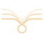
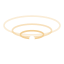
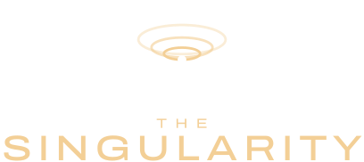
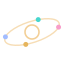
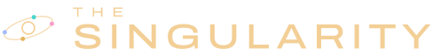
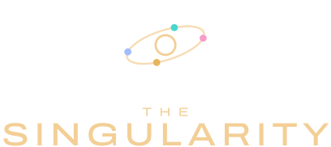

Vista previa · logotipo
The Singularity: tres símbolos para elegir.
Las tres parten de tus capturas: el espacio que se curva hacia un punto que late, el dorado del disco de luz y «THE SINGULARITY» debajo. La palabra es la misma en las tres; cambia el símbolo. Míralas en el iPhone y quédate con una letra.
A Pozo
El espacio-tiempo de tu captura, reducido a tres líneas que se hunden hacia el punto, con el anillo de luz a su alrededor. Es la malla de la entrada hecha símbolo.

B Horizonte
El mismo pozo visto desde arriba: anillos que se estrechan y bajan hasta el punto. Es la más limpia en tamaño pequeño.


C Cinco
El punto con su anillo y una órbita con los cuatro agentes en sus colores: «uno se hace cinco» dentro del símbolo.



La palabra
- Fuente Archivo, de licencia libre, en su versión expandida. «SINGULARITY» va a peso medio y con interletra abierta; «THE», más fina y más abierta aún, para que lea como un antetítulo.
- Las letras están convertidas en trazos, con el ajuste entre pares de letras de la propia fuente. El logotipo se ve igual en cualquier móvil, aunque la fuente no haya cargado.
- En la página, el punto blanco del símbolo late al ritmo de la malla y es donde termina el big bang.